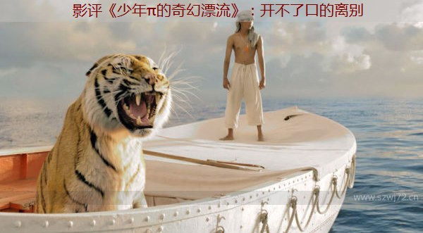

影评《少年π的奇幻漂流》：开不了口的离别

真是难为李安了，真是难为了。少年，水，动物（包括老虎），所有导演都明白，最头疼的几样东西，最难拍的，都凑在了一起。更不要去提，一个片子渗透了三种宗教，还有导演首次尝试3D。（我后来知道老虎是3D做出来的，我说怎么这么听话，小孩和海是在一个游泳池拍的，我欲哭无泪）
影评《少年π的奇幻漂流》：开不了口的离别
这部小说，也许是名字太过于平凡的原因，一直历经磨难，但只要是看过的人，绝对不会后悔。相信所有的人看完都有所感动，这是一个有感情，有血肉的片子。
但是还是要说，宗教这种东西对于中国人其实是没有意义的，信仰这东西，很多人都不会懂，也无从去体会。而影片大量的篇幅是在讲宗教，主旨也是让人相信上帝的存在，上帝是爱我们的，这显然对广大无神论者没什么意义，所以开头的长篇幅会让一些观众觉得有些拖沓。那么，你们就看中间部分就好，这样，片子也可以改名叫《虎口脱险》或者《少年与孟加拉虎的海难求生》都比较适合。
再最后，老虎理查德头也不回的进入丛林的一刹那，我的眼角是有泪的，我明白π小朋友的伤心，π泪流满面的控诉着，它怎么能头也不回的离开了我。
想想看，我们生命中有多少人是这样头也不回的离开了。我想起了我生命中所有的那些没有说出口的离别。人生最难过的是也许就是这样，没能好好地告别，没能认真的说句再见，没能用眼神表达一下不舍。难道是羞于表达，才这样头也不回吗？
还是只是像π那只相信理性和科学的父亲说的那样，你在别人眼中看见的只是自己的倒影呢？
不，也许是看见了倒影，是自己把自己的希望强加给了别人的眼神，但是别人同样在你的眼睛里看见了自己的倒影，你中有我，我中有你。I see you.You see me.I'm in you. You are in me.这是我的信仰。
我想最后理查德老虎先生，没有把π小朋友吃掉的原因，可能是不想那么孤单吧。谁也不想那么孤单的死去。To be alone.对π来说，同样如此。没有老虎理查德，π不可能幸存下来。
π失去了家人，变成了孤儿，前所未有的孤单，如果他一个人在船上，他没有任何可能撑到最后，已经没有了活着的意义。但正是因为有理查德老虎先生。π随时面临着成为盘中餐的可能，他时刻保持着警惕，一直未自己的生存努力着。
他想尽办法不断地给理查德寻找活的食物，一方面说是为了喂饱理查德，才能不让理查德吃自己，另一方面其实理查德早已成了他活着的意义。他不能让理查德死掉。所以到了最后理查德离开了他，他才会那样的痛苦。人是有感情的，在一起时间长了都会有感情，也许这就是人和动物最大的区别。也是人不如动物洒脱的一点，所以有太多的人选择不要去道一声再见。抑制不住的情感，开不了口吧。
电影最后回放理查德先生走入森林，就是为了让人们再次难过，这时候回放，我的心一揪，我心想理查德其实一定回过头了，一定其实回头了，只是π派小朋友昏倒了没看见，可是回放之后，理查德依然是头也不回，这么潇洒。
还有一点就是影片最后π派认真的讲了另外一种结局，人吃人，自相残杀的故事，导演花这么大篇幅，叙述难道说这才是事实的真相，可是我还是强迫自己相信童话，所有人都相信童话，因为现实太残酷。一千个人心中就有一千个老虎理查德。
另及，中间有个神奇的小岛，上面成千上万的小狐�B，真的萌翻了，好像冰川时代的主演变的无数影分身，只是理查德先生很扫兴的吃来咬去，小家伙们倒是也不躲，就大家窝在一起萌。一时间，各种少女心思泛滥。（炜玮）
|
 首页 ＞＞ ＞＞ 生命成长
首页 ＞＞ ＞＞ 生命成长